Преимущества города Sedona
городок в АРИЗОНЕ,
заслуживающий большего!
Рассмотрим 5 причин, по которым
Седона круче, чем гранд каньон!
-
НАСТОЯЩИЙ ГОРОДОК
— №1 —
СЕДОНА НЕ АТТРАКЦИОН ДЛЯ ТУРИСТОВ,
ТАМ ТЕЧЕТ СВОЯ ЖИЗНЬ
-

-
 Жилье
Жилье
Рекомендуем пожить в
настоящем мотеле, все как в
кино! -
 СУВЕНИРЫ
СУВЕНИРЫ
Не только китайского, но и
местного производства! -
 ЕДА
ЕДА
Всегда заказывайте
ФИРМЕННЫЙ БУРГЕР, Вы НЕ
разочаруетесь!
-
-
ТАМ ЕСТЬ Мост дьявола
— №2 —
Да, по нему можно пройти! Если вы
осмелитесь, конечно

-
НЕБОЛЬШАЯ ПЛОЩАДЬ
— №3 —
ВСЕ интересные места находятся
очень близко -
КРАСИВАЯ ДОРОГА
— №4 —
ЕХАТЬ В СЕДОНУ ИЗ ЛАС-ВЕГАСА
совсем НЕ СКУЧНО! -
МАЛО ТУРИСТОВ
— №5 —
Большинство едет в гранд каньон
и толпится там